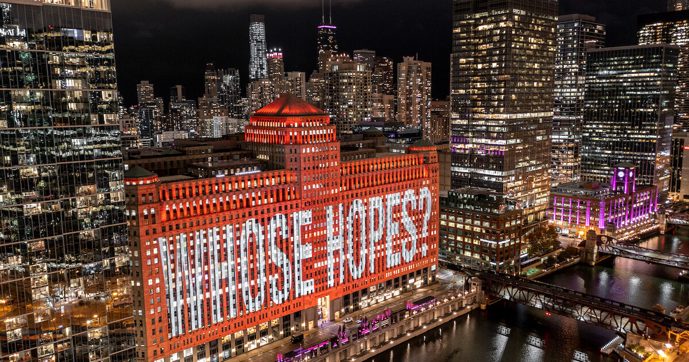

Chicago · ImperdibleMiércoles 18 Nov · 19:30 – 20:00 hs
ART on THE MART: "Where Data Becomes Light"
Chicago Riverwalk (entre Wells St y Franklin St)
Proyección especial de 2.5 acres vinculada a SC26, co-dirigida por Daria Tsoupikova (UIC EVL) junto a Argonne National Lab. Es a las 19:30 hs (ya estás libre) y es el mejor lugar para conocer en persona al equipo de UIC EVL y a Cynthia Noble (Directora de ART on THE MART).
Proyección Monumental / SC26
Ver programa ↗